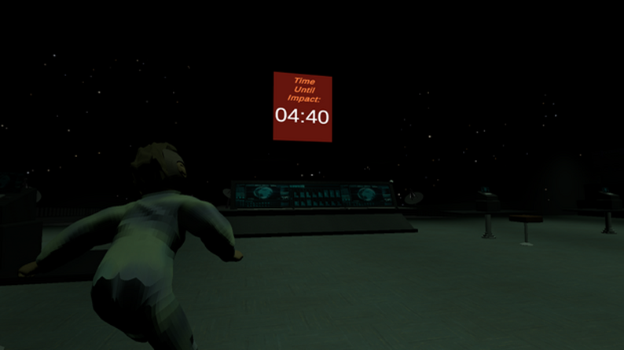

Refresh Protocol, Summer 2025
Unity
A third person escape room-esque game made in 1 week for the Universal University 2025 Game Jam.
Worked in a group of 6, as one of two programmers (focusing on the level functions), as well as aiding in team
management.
This project was my first foray into participating in game jams, as well as working in a group with such tight timing
Itch.io page for the game can be found here
